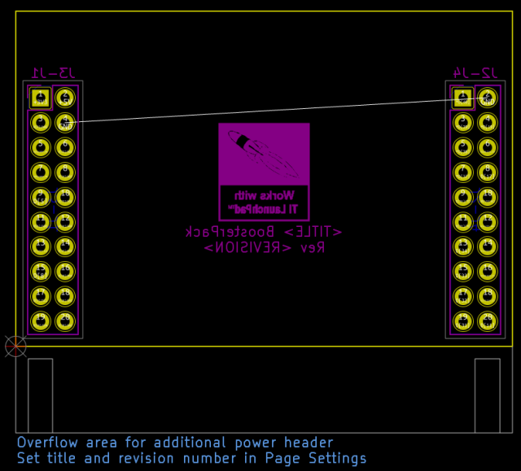

This template forms the basis of a PCB compatible with the Texas Instruments BoosterPack specification; compatible with the TI LaunchPad family of development boards. The PCB includes the required headers and the a LaunchPad compatibility logo provided by TI. This is the 40-pin variant, used on a majority of the LaunchPad boards.
Useful Links:
Note: due to the fact that the official 3D library does not include "long" or "stacking" female headers, the default Connector_PinSocket_2.54mm models were used.

(c) 2021 Caleb Reister
(c) 2012 Brian Sidebotham
(c) 2012 Henry von Tresckow
(c) 2012 Kicad Developers